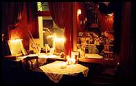
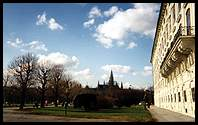
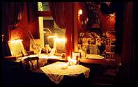
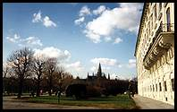

Al Badaui
Bane's Bar
Cafe Aera
Cafe Central
Cafe Diglas
Cafe Frauenhuber
Cafe Hotel Sacher
Cafe Mak
Cafe Sperl
Cafe Stein
Carmina Burana
Chamëleon
Comida y Ron
Danieli
Das Möbel
Europa
Hawelka
Kaffee Alt Wien
Kino Am Graben
Kix Bar
Kleines Cafe
Krah-Krah
Krugers Bar
La Crêperie
Pizzeria Valentino
Santo Spirito
Steffl
Titanic
Ungersböck
The Vienna Globe
Wein-Comptoir
Zum Kuchldragoner
Zum Leupold
Zum Weissen auchfangkehrer
(the 'Bermuda triangle')
(a würstelstand)
see also: European café watch
Back in 1999 I was in Vienna for a few weeks, where I spent a lot of time going out eating and drinking. Lots of fun!
My favourite restaurant was Santo Spirito, followed by Wein-Comptoir and La Crêperie.
My favourite place for coffee was Kleines Cafe, followed by Cafe Aera and Hawelka.
My favourite place for beer or wine was Titanic, followed by Krah-Krah and Kaffee Alt Wien.
Tuesday, 23 February
Wednesday, 24 February
Thursday, 25 February
Friday, 26 February
Saturday, 27 February
Sunday, 28 February
Monday, 1 March
Tuesday, 2 March
Wednesday, 3 March
Thursday, 4 March
Friday, 5 March, and the weekend
Tuesday, 9 March
Wednesday, 10 March
Friday, 12 March
Saturday, 13 March
Sunday, 14 March